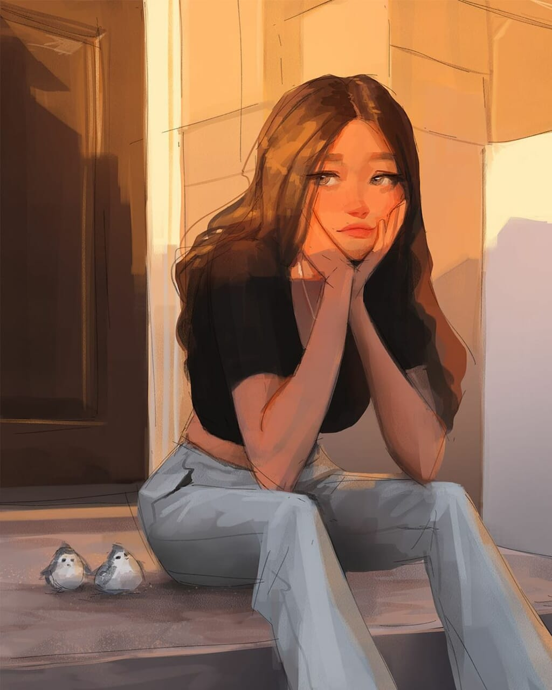
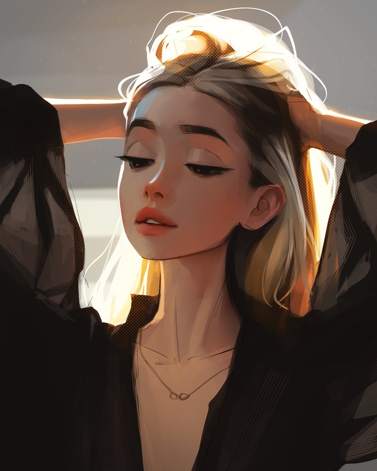

Samdoesarts is a youtube-based digital artist living in Toronto.
His unique style consists of many different characteristics, such as
angular facial features and high-contrast, stylized lighting. Something
remarkable about Sam's style is that he can combine artistic elements
from realism and cartoon techniques without letting his drawings
look artificial or forced. All of his characters, who are mainly
female, look natural and elegant. Learn more about Sam
here.

